11/21 自分で昼・夜・侵略の3Dを撮って洗い出したもの＋テスター4回分の報告。★3＝すぐ目につく／★1＝気づく人は気づく。写真の無いものはテスター報告。
入口のゴーレムが水晶の山に半分埋まっている。毎回同じ場所で起きる
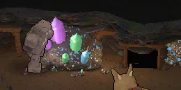
浮かせたコウモリ（進化）が赤い葉っぱのように見え、何の子かわからない。狼は柵の中に立っている
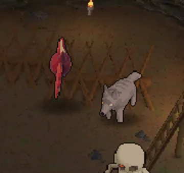
しゃがんで這っているように見える。頭が大きすぎる
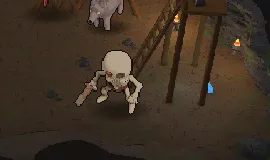
蜘蛛が輪の外にはみ出し、キノコやおばけが案山子に重なる
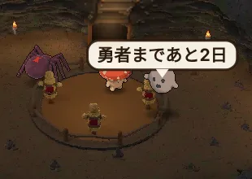
入口以外は輪郭がまったく同じ。掘っても「新しい場所」に見えない
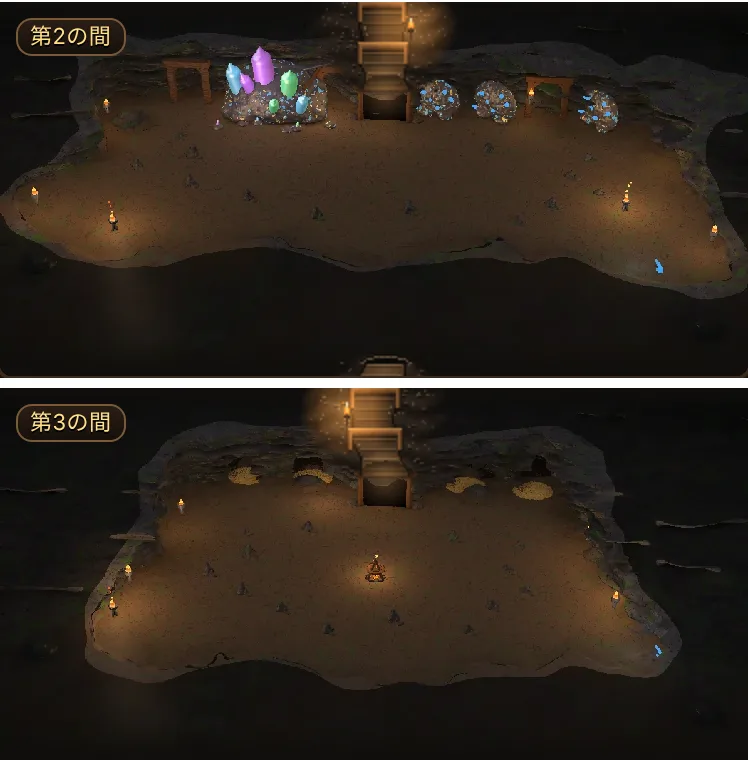
床の手前がまっすぐ切れて、その下が何もない黒
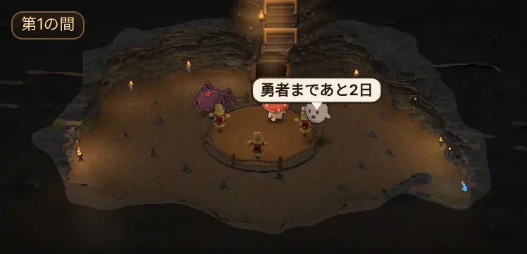
階段の上の端がどこにもつながっていない
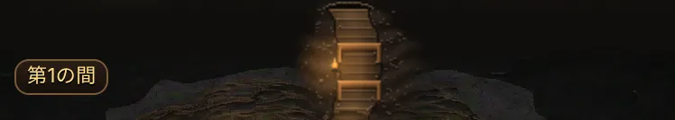
寝床は奥の壁ぎわにあり、魔物は別の場所にかたまる。真ん中に小さなたき火だけがある
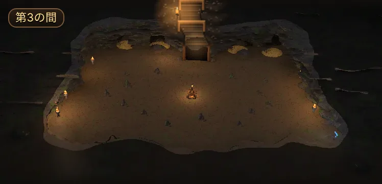
インプの影がずっと下にあって、離れて見える
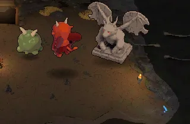
昼の主の間で、主が入口の方を向いていて顔が見えない。玉座の台が真っ黒な四角
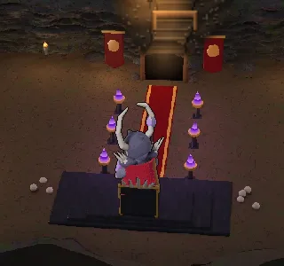
入口に結晶と鉱石が並び、他の採掘部屋と見分けがつかない
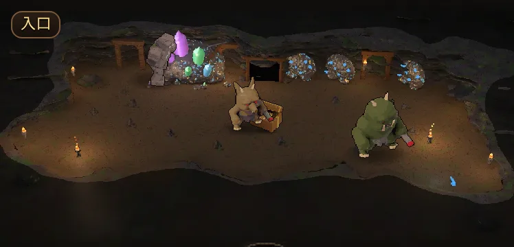
白いツルハシのアイコンが部屋の上にぽつんと出る
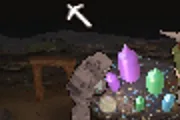
右端の青い結晶・たいまつの位置がどの部屋も同じで、使い回しに見える
魔物の数より部屋が多いと、何もいない部屋が続く（テスター報告：寂しい）
テスター報告。中身のない灰色の枠が宙に残ることがある
テスター報告。B2→B1と押すと、金枠がB2に残る
殴られた子が動いた・倒れたあと、数字だけ空中に残る（右の163・71など）
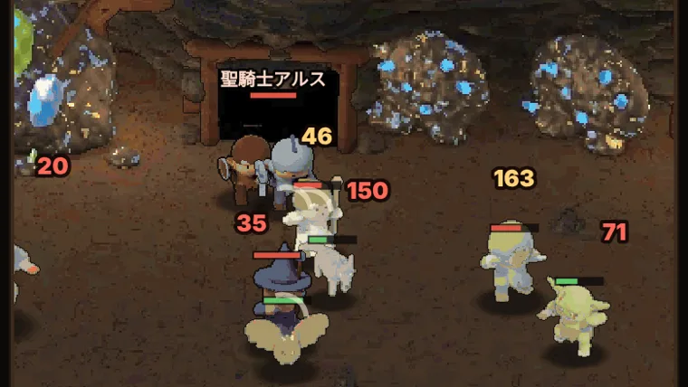
上の約6分の1が真っ黒。左右の端で魔物が半分切れる
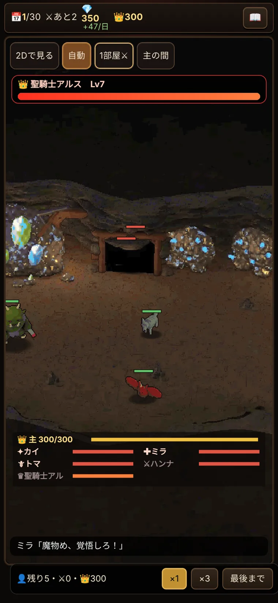
夜は浮かせていないので、羽を広げて寝そべって見える。体力バーだけ宙に浮く
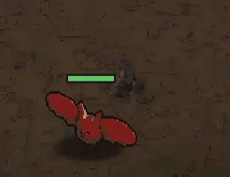
焼いた背景の解像度が足りず、近づくとカクカクに見える
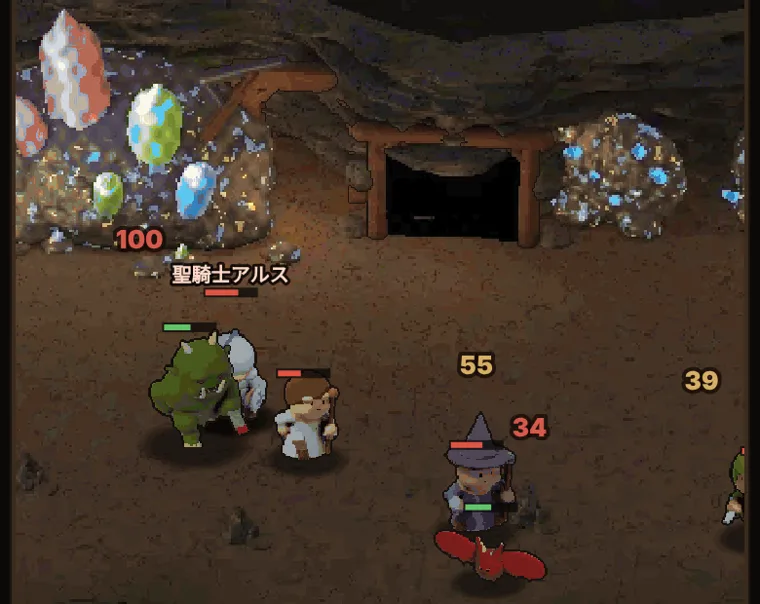
攻撃の白い弧が、相手のいない場所に描かれることがある
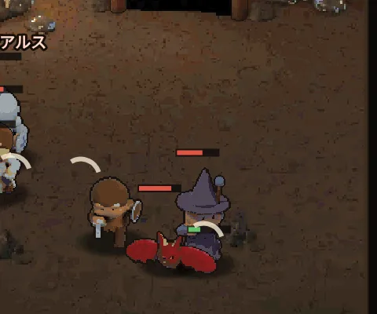
トンネルの口に3〜4人が重なり、誰が誰かわからない（名前は消したので一覧で見る形）
テスター報告
「撃破！」「門を破った！」とダメージ数字が同じ場所で重なる
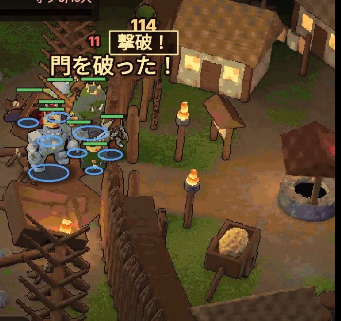
門のあたりで、柵・櫓の残骸と魔物が重なる
門の体力は上に出るが、どこが門かが絵でわからない。壊れても見た目がほとんど変わらない
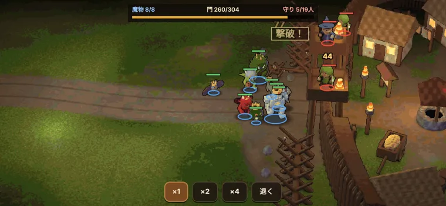
横から見る画面なのに、正面（こちら）を向いたまま進む子が多い
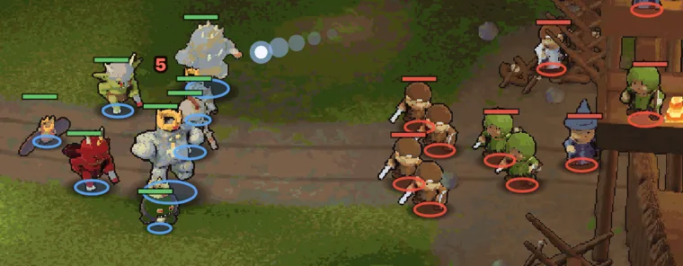
飛ぶ子なのに、平たく地面に置かれて見える
ぶつかり合うと青と赤の輪がたくさん重なる
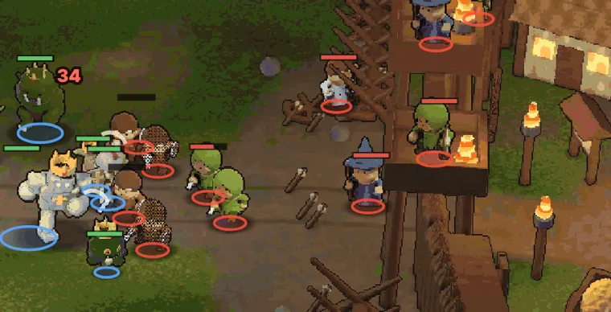
戦いは右上に寄り、画面の半分が草地だけになる
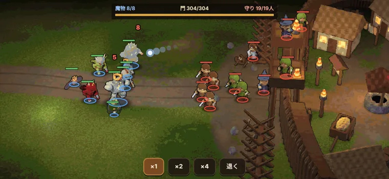
草の上の小石が、地面から浮いた玉に見える
焼いた背景を引き伸ばしているので、近くの物がにじむ
テスター報告。倒れた跡が汚く残る
テスター報告
青い字が暗い帯の上にあり、コントラストが弱い